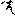

卍新纂大日本續藏經 第02冊
No.204 妙法蓮華三昧祕密三摩耶經 (1卷)
【唐 不空譯】
第 1 卷
No. 204
妙法蓮華三昧祕密三摩耶經
摩訶毗盧遮那遍照薄伽梵。遊法界宮與寂光海會俱。自受法樂從如來壽量金剛下大悲胎藏。說自證偈言。
歸命本覺心法身 常住妙法心蓮臺
本來具足三身德 三十七尊住心城
普門塵數諸三昧 遠離因果法然具
無邊德海本圓滿 還我頂禮心諸佛
金剛薩埵白佛言。八句自證云何演說耶。
大日薄伽梵告金剛薩埵言。上四句者。金剛界會三十七尊住月輪中遊於中臺。下四句者。八葉諸尊普門三昧法然漫荼羅會。五院兩界本來同體自性大漫荼羅。
大日尊告金剛薩埵言。於一心中妙法蓮華為中臺金剛界會三十七智。八葉即是胎藏界會普門三昧。
金剛薩埵重白佛言。妙法蓮華八葉中臺願為演說。爾時大日薄伽梵告金剛薩埵言。諦聽善思念之。如來祕密妙法蓮華本地八葉中臺諸尊序品該舒八葉諸尊。中間諸品顯示八葉。勸發一品結歸八葉。其間二十六品八葉中臺諸尊。方便譬諭。二品東方阿閦佛一葉。信解藥草授記三品東南普賢菩薩一葉。化城諭品南方寶生佛一葉。五百人記法師三品西南文殊師利一葉。從寶塔品至神力品一十一品妙法蓮華中臺內證。是故二佛在寂光多寶塔中遊虗空會。囑累藥王西方一葉。妙法蓮華囑累蓮華部主彌陀。妙音觀音二品同是西北方一葉。陀羅尼品北方天鼓雷音佛一葉。妙莊嚴王東北彌勒菩薩一葉。亦復品品文文句句皆有八葉。序品涌出兩品總舒八葉諸尊。方便壽量等顯八葉。安樂勸發同結八葉。亦復方便唯佛與佛諸法實相中臺自證。爾時世尊告舍利弗已下。東門舍利弗領東南方葉。譬諭南方。信解藥草授記西南。化城西方。五百人記法師三品西北方葉。寶塔提婆二品北方。勸發彌勒前十四品八葉諸尊。壽量一品中臺。毗盧分別隨喜東門一葉。不輕西葉。神力南葉囑累西北藥王西葉。妙音觀音西北一葉。陀羅尼品北方一葉。嚴王東北。
金剛薩埵白佛言。妙法蓮華經。文殊普賢為本尊耶。大日如來告薩埵言。如汝所問。妙法蓮華前十四品文殊師利為其本尊。妙法蓮華後十四品普賢菩薩為其本尊。是故法華前十四品文殊師利仰為導師。燈明佛昔妙法蓮華經文殊導師。今入龍宮唯說法華引導龍女須臾成佛。安樂行品文殊師利問安樂行。
遮那告言。爾時文殊師利坐千葉蓮華。首戴八葉寶冠。大海自然涌出。
遮那重告言。文殊師利三世諸佛智母。龍宮畜生甚愚。以文殊智破龍畜愚。八歲龍女。於剎那頃發菩提心。於須臾頃便成正覺。
遮那告言。勸發品曰。若法華經行閻浮提。有受持者應作此念。皆是普賢威神之力。若有受持讀誦正憶念解其義趣如說修行。當知是人行普賢行。
薩埵重白。妙法蓮華本尊普賢有淺深耶。
遮那重言。汝自普賢何問自耶。普賢淺深有五重異。一者等覺普賢。二者妙覺普賢。三者本覺普賢。四者文字普賢。五者實相普賢。第一等覺變化普賢者。妙法蓮華八葉東南葉普賢。又勸發品從東方來普賢是也。第二妙覺普賢者。妙法蓮華八葉南葉寶生如來。第三本覺普賢者。妙法蓮華中臺本覺大日如來。第四文字普賢者。妙法蓮華根本一字a 字不生周遍法界普賢是也。第五實相普賢者。妙法蓮華諸法實相普賢是也。
亦復金剛薩埵白佛言。有自性身普賢自受用普賢他受用普賢變化身普賢耶。
遮那告言。第一自性身普賢者。華嚴經示普賢唯依如如不依國土。是自性身普賢尊也。第二自受用普賢者。又曰普賢一毛孔中有不可說微塵佛剎。是自受用普賢尊也。第三他受用普賢者。於色究竟。成自受用身。為伏九十五種外道。下南閻浮。八相成道。是他受用普賢尊也。第四變化身普賢者。法華經言。普賢菩薩從東方來。普賢經云。普賢菩薩乃生東方淨妙國土。其國土相。雜華經中已廣分別。是變化身普賢尊也。
亦復大日如來告言。有九重普賢。一者等流普賢。二者妙法蓮華等覺普賢。三者妙法蓮華妙覺普賢。四者妙法蓮華中臺本覺大日普賢。五者妙法蓮華平等本覺毗盧遮那如來普賢。六者妙法蓮華諸法本覺毗盧遮那如來普賢。七者妙法蓮華一輪普賢。八者妙法蓮華第一普賢。九者妙法蓮華頂上普賢。
爾時薩埵。首戴五智寶冠。左手持金剛鈴。右手持五鈷金剛杵。杵按於心。坐蓮華臺。放光照法界。白薄伽梵。今解佛敕妙法蓮華有三本尊。一者釋迦如來大日如來變化尊像。二者前十四品文殊師利為其本尊。三者後十四品普賢菩薩為其本尊。妙法蓮華修行同入本覺一宮久遠本地無量壽命決定如來摩訶毗盧遮那如來。
爾時摩訶毗盧遮那如來告金剛薩埵言。善哉善哉。深入妙法蓮華性海。如汝所言。妙法蓮華釋迦大日為其本尊。亦復文殊普賢菩薩為其本尊。十如實相八葉九尊十尊。一部始修但說其德。妙法九尊蓮華所座。妙法蓮華八葉四隅菩薩等覺。妙法蓮華八葉四方四佛妙覺。妙法蓮華中臺大日如來本覺非因非果遠因果。胎藏等覺金剛妙覺胎金之上。本覺法界寂光海會。無始無終性相常住。一切眾生皆有妙法蓮華八葉中臺十如十尊。是名妙法蓮華經王。
妙法蓮華方便祕密三摩耶品
爾時大日如來告金剛薩埵言。唯佛與佛乃能究盡諸法實相。所謂諸法如是相如是性如是體如是力如是作如是因如是緣如是果如是報如是本末究竟等。
百葉千葉乃至不可說葉。皆是妙法蓮華八葉卷舒變現。蓮華八葉八印報是中臺。如是本末究竟平等平等大慧八葉中臺平等大慧差別九尊。葉葉皆是八葉八印八佛八頂。最下八葉。中間八印。最頂即是八佛八頂。諸佛菩薩在所遊方。示現廣大染淨國土。皆居妙法八葉蓮華。八葉所依八方世界皆為能依。香積佛土依於中臺。十方世界皆居一心。一心八葉。心無盡故八葉無盡。如來若現東方無量恒沙佛土。舒於東葉而作佛事。餘方餘葉亦復如是。
爾時金剛薩埵重白佛言。諸佛世尊出世大事四佛知見祕密。願為大眾演說。
大日如來為大眾說四佛知見妙法蓮華八葉中臺四方四佛知見自證即說肝心真言告示。
曩謨三曼多勃駄南唵阿阿暗噁薩縛勃駄枳欀曩娑乞蒭毗耶誐誐曩娑縛羅乞叉你薩里達磨浮陀哩迦薩駄覽惹吽錽護縛日羅囉乞叉[牟*含]吽娑縛訶
以下金剛薩埵自說。
na 曩maḥ 謨sa 三ma 曼ta 多bu 勃ddhā 駄nāṃ 南者歸命普佛陀義。唵者三身以三字含一字故。其在守護。是即三身具足義。a 阿者開佛知見義。ā 阿者示佛知見義。中aṃ 暗者悟佛知見義。aḥ 噁者入佛知見義。是即四方四佛種子sa 薩rva 嚩bu 勃ddhā 駄者一切佛義。jñā 枳欀na 曩者知義。sa 娑kṣā 乞蒭bhyaḥ 毗耶者。見義知見法界義。ga 誐ga 誐na 曩svā 娑縛ra 羅者。如虗空性義。kṣa 乞叉ni 你者。離苦義。是皆方便功德。sa 薩里者妙正義。dha 達rmma 摩者法義。dhra 浮dha 陀ri 唯ka 迦者。白蓮八葉義。su 薩traṃ 駄覽者經義。是則妙法蓮華經義。jaḥ 惹者入義。hūṃ 吽者遍義。vaṃ [金*(离-禸+ㄆ)]者不可得義。hoḥ 護者歡喜義。va 縛jra 日羅者。堅固金剛義。ra 囉kṣa 乞叉māṃ [牟*含]hūṃ 吽者空無相義也。即是密說遠本義。故方便品曰從。久遠劫來讚示涅槃法者即此義也。空無相義者。文殊師利菩薩三解脫門功德義故。以文殊為本尊。是方便品肝心真言兼本實也。
妙法蓮華三昧見寶塔祕密三摩耶品
爾時佛前有七寶塔高五百由旬。金剛薩埵白薄伽梵。此寶塔中有何佛耶。
大日如來告薩埵言。此寶塔中有大覺獅子座。座上有寶蓮華。蓮華上左有bhaḥ 字。bhaḥ 字變成大鉢。鉢變成釋迦如來。釋迦如來變成胎藏界大日如來。大日如來法界定印。右有a 字變成寶塔。寶塔變成多寶如來。多寶如來變成金剛界智拳印。大日如來胎藏金剛二佛。竝入一佛壽命海中無別。即是無量壽命決定如來入三摩地。心月輪中有a 字。a 字變成八葉蓮華。八葉蓮華遍法界剎。利益無邊一切群生。
大日如來告薩埵言。妙法蓮華經一部始終文文句句字字皆悉無非a 字。a 字本來實相本來不生。a 字有四。一者平等。二者本誓。三者除障。四者驚覺。a 字亦四。一者息災。二者增益。三者降伏。四者接召。序中敘四。正中顯四。弘中弘四。六瑞a 字平等實相。下至阿鼻上至有頂平等金色。蒙平等光悟於平等實相寂光。世尊大悲遂說四a 令悟平等。方便品中正說平等。傍說餘三。火宅諭中正說本誓。傍說餘三。窮子化城正說除障。傍示餘三。雲雨五百正說驚覺。傍宣餘三。人記在中。法師流通已前。四a 分身雲集開一制底。多寶如來證明四a 。達多文殊常傳四a 速疾之門。龍女出海南方成道。發誓薩埵捨身弘宣a 字四法。四安樂行一剎那圓滿a 行。涌出千界大眾欲顯本地大曼荼羅本不生a 我。即久成如來壽量常住大日心地本不生體。乃至普賢從本遠來重請四法諸本不生。唯覺我心本來不生法界普賢大日心地a 字不生。即是眾生心自性本清淨妙法蓮華體。
妙法蓮華三昧提婆達多祕密三摩耶品
爾時金剛薩埵白薄伽梵。提婆達多本源云何。
大日如來告薩埵言。提婆達多文殊師利八大童子彼清涼山不思議童子。是故提婆品時。文殊師利不思議童子。首著八葉蓮華寶冠從海涌出。引導龍女即身成佛。達多文殊文殊利劒龍女吞文殊利劒俱利伽羅不動威怒不動威怒娑竭羅龍王七佛出世龍女從海涌出即身成佛上地水火風空得如意寶珠。妙法蓮華八葉中臺中臺不動威怒速疾成道。
金剛薩埵重白佛言。娑竭羅龍王女即身成佛時。一切眾生三魂七魄即身成佛。乃至草木即身成佛密呪願說。
爾時世尊。說即身成佛祕密真言曰。
oṃ va vi a vi ma a ā bhī va vi kha li kha li sa ri svā va
說此真言時。草木國土悉皆平等即身成佛。薩里達磨芬陀梨華最初羯羅藍內有十色千葉蓮華。蓮華中有一千三百九十五尊。此佛忽然建立身形千葉白蓮華成三百六十白骨上覆大多勝三魂圓滿於月輪中。佛性了了三昧證慧甚大自在。又說真言曰。
oṃ hāṃ vi ku va ku va va ma va ma ma vi svā hā
說此真言三魂七魄入于妙覺即身成佛。
妙法蓮華如來壽量祕密三摩耶品
大日如來告薩埵言。妙法蓮華久遠實成如來。本來多寶塔中湛然常住。其名無量壽命決定王如來。手結法界定印。首有二佛寶冠。寶冠左有釋迦如來。是胎藏界。毗盧遮那如來右。有多寶如來。是金剛界。毗盧遮那如來常在塔中。雲集分身同體自性毗盧遮那如來海會寶塔東門有上行菩薩。南門有無邊行菩薩。西門有淨行菩薩。北門有安立行菩薩。是四菩薩四方四佛。是故結四佛印。又寶塔東南有普賢菩薩。西南有文殊師利菩薩。西北有觀世音菩薩。有彌勒菩薩。妙法蓮華八葉中臺三部大日同體海會五百塵點劫上無量壽命決定王如來。說心真言曰。
曩謨阿路哩弭跢欲枳孃曩尾[寧*頁]室羅逝捺羅也怛他蘖跢也唵薩縛僧塞迦羅跛哩秫駄達磨帝摩訶曩也波里縛隷莎呵
金剛薩埵說曰。na 曩mo 謨者歸命句。a 阿pa 路ri 里mi 弭tā 跢者東方句。欲jñā 枳孃na 曩者南方句。vi 尾ni [寧*頁]śca 室者西方句。rā 羅je 逝ndra 捺羅ya 也者北方句。ta 怛thā 他ga 蘖tā 跢ya 也者中臺句。oṃ 唵者三身中臺八葉俱具三身。故真言中間置oṃ 唵字。sa 薩rva 縛saṃ 僧ska 塞迦ra 羅者南方句。pa 跛ri 哩śu 林ddha 駄dha 達rmma 磨帝者文殊句。ma 摩hā 訶na 曩ya 也者觀音句。pa 波ri 里vā 縛re 隷者彌勒句。svā 莎hā 呵者決定成就句。此有深祕。
爾時金剛薩埵白世尊言。久遠實成如來。在何處耶。大日如來告薩埵言。一切眾生一念心中。皆有如來壽量長遠身寂光海會不退菩薩亦不能知。是故彌勒三請我如來四誡然演說。
世尊告言。法華宣示眾生聞佛壽命長遠一念信解。如來如實知見三界之相無有生死。毗盧遮那徧一切處。其佛住處各常寂光。如來般若知見三界六道山河大海本來虗空無生無死。大般涅槃常寂滅光。眾生不知。名為生死之初無明。
涅槃經後分上曰。我以甚深般若。徧觀三界一切六道諸山大海大地含生。如是三界根本性離畢竟寂滅同虗空相。無名無識永斷諸有。本來平等無高下相。無見無聞無覺無知。不可繫縛。不可解脫。無眾生無壽命。不生不起不盡不滅。非世間非非世間。涅槃生死皆不可得。其知是者名出世人。是事不知名生死始。汝等大眾應斷無明滅生死始。徧觀三界有情無情一切人法悉皆究竟。不出三界。不入諸有。本來清淨無垢無煩惱。與虗空等。不平等非不平等。盡諸動念。思想心息。如是法相名大涅槃。復告大眾。我以佛眼。徧觀三界一切諸法。無明本際性本解脫。於十方求了不能得。無故所因枝葉皆悉解脫。無明解脫故乃至老死皆得解脫。以是因緣我今安住常寂滅光名大涅槃。
又妙法蓮華三昧如來壽命祕密三摩耶品
金剛薩埵重白佛言。久遠實成無量壽命決定王如來之上。有佛法耶。
毗盧遮那如來告言。久遠實成妙法蓮華。有八重位。一者久遠等覺本地妙法蓮華八葉四菩薩是等覺位尊。二者久遠實成妙覺本地妙法蓮華八葉四佛妙覺位尊。三者久遠實成妙覺之上中臺本覺久遠實成本地妙法蓮華中臺大日如來本覺八葉四佛始覺如來。四者本地中臺大日如來本覺之上有妙法蓮華。平等本覺如來中臺本覺如來八葉四佛下為始覺。中臺獨為本覺如來。此是第九報臺本覺大日還下佛第十本末究竟平等本覺毗盧遮那如來本相葉佛乃至末報臺大日如來平等八葉中臺皆同本覺如來本覺位高。五者平等本覺如來之上諸法本覺毗盧遮那如來平等本覺毗盧遮那如來尚八葉中臺九尊本覺九法身其餘諸法九法界等非本覺佛尚下諸法本覺毗盧遮那如來九法界森羅萬像皆悉本覺如來。至一切塵。皆來禮仰為本覺如來。六者諸法本覺如來之上一輪之法三重本覺如來墮始覺本覺故尚下一輪始覺本覺不立本來不生法故在本覺上。七者一輪上第一之法一輪a 字字輪種子種子三昧耶形尊形有相有相凡愚方便而實唯住於實相第一義實相高。八者第一義實相義實相義尚隨義故下獨王頂上非愚量實相最頂。
妙法蓮華三昧常不輕菩薩祕密三摩耶品
爾時金剛薩埵白世尊言。不輕菩薩云何禮耶。
大日如來告言。常不輕者。常是一禮。不輕是一切禮。知見眾生心蓮禮拜。不專讀誦經典。但行禮拜。信vaṃ [金*(离-禸+ㄆ)]字門。禮中臺摩訶毗盧遮那如來。是名一禮。va 縛字門者言語道斷。上有一點即是大空。大空即是不思議。我法妙難思。但行禮拜。四禮。一禮金剛部性。二禮寶部性。三禮法部性。四禮羯磨部性。是名一切禮。禮世間相常住佛性。禮oṃ 字門。禮oṃ 字門。禮金剛部自性法身之性。禮煩惱即菩提佛性。禮trāḥ 怛洛字門禮trāḥ 怛洛字門。禮寶部功德法身之性。禮結業即解脫佛性。禮hrīḥ 紇利字門。禮hrīḥ 紇利字門。禮法部智惠法身之性。禮生死即涅槃佛性。禮aḥ 惡字門。禮aḥ 惡字門。禮羯磨部變化身之性。皆悉禮拜。一禮一切禮金剛薩埵重白佛言。不輕菩薩可禮草木國土等耶。毗盧遮那佛告言。深住禮拜。如汝所問。法界體性無分別。森羅萬像即法身。是故我禮一切塵。
妙法蓮華三昧陀羅尼祕密三摩耶品
金剛薩埵白世尊言。十羅剎等本源云何。
毗盧遮那佛告言。十羅剎女。本有三覺。一者等覺。二者妙覺。三者本覺。初四羅剎淨行等四大菩薩第五羅剎釋迦牟尼中四羅剎八葉四大菩薩第十羅剎多寶如來又十羅剎十如是尊形八羅剎八葉如是第九皐諦第九如是第十羅剎本末究竟等也。
夫薩里達磨芬陀梨迦三昧薩駄覽者。大日如來答說金剛薩埵請問。開示本初祕妙密藏。稱述一切諸情非情三魂七魄即身成佛乃至草木即身成佛祕密真言。我高祖大師標題於大蓮華部無障礙經。舉經文中之自證八句偈。以成立即身成佛之義也。有曰。蓮華三昧經者。我朝聞其名未見其經。弘法大師入唐時。謁惠果和尚。雖遂傳法灌頂。而蓮華三昧經最深祕密法不能傳之。唯以歸命本覺心法身(乃至)還我頂禮心諸佛之偈。傳之而已(文)然案a 字觀檜尾記引據於蓮華三昧經以證成於自口說焉。由斯觀之。詎惟非八句自證偈必矣。谷響集第十(三右)曰。台家經旨相承口訣中曰。蓮華三昧經亦云無障礙經。具題曰妙法蓮華三昧祕密三摩耶經。智證大師拔十卷中至要請來云(文)凡此祕經蓋有兩卷。所謂今之祕經與說六地藏尊本地之經矣。于越亮去元祿十四載首夏中旬。苟有傳燈護法微志。飛錫北京。謁于西山真乘院大僧正源公。面授口譯悉遂願望。歸拜壬生地藏菩薩。寓宿於安養菴。幸得斯經於藏。喜踊無極。誠希有哉。百世之嘉會千載之良遇也。乃採毫素而事繕寫。時時細讀衍文脫字倒字筆誤往往而在。欷然靡弗釋卷悲歎焉。今年豐山西寮秀敘闍梨慈慧東海鹿嶋春傳古本。由是兩經參考更親書寫尋播旁訓。以貽將來。雖爾。間猶不無狐疑。冀俟使於後學獲正好本。添刪純粹粲然潤色流通[金*(离-禸+ㄆ)]水利澤枯槀妙法華實繁茂久住真風颺開心地阿蓮云。